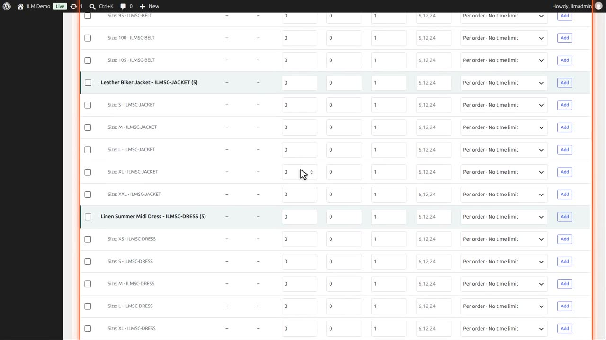
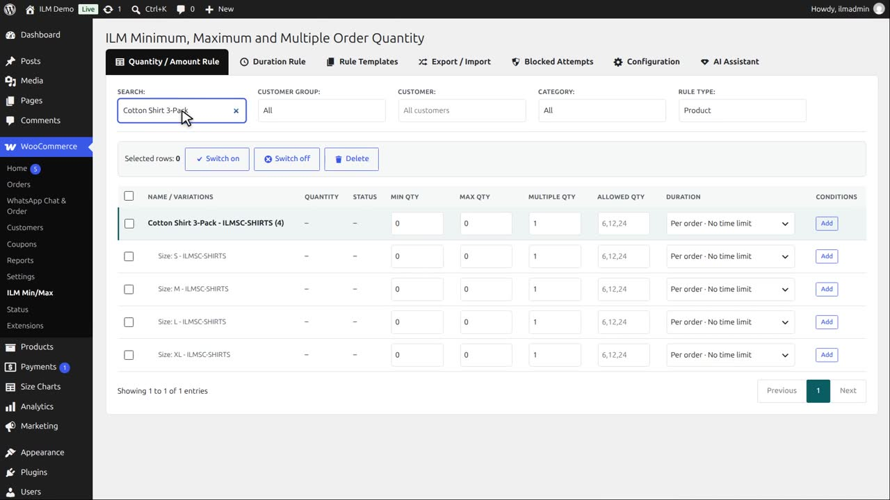
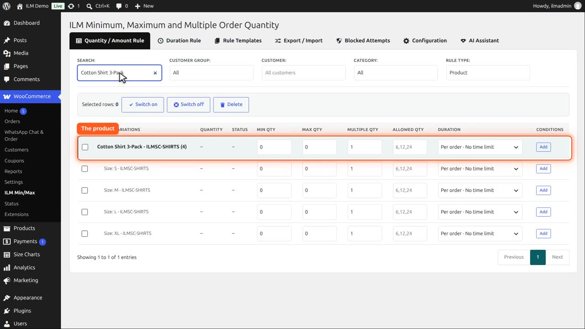
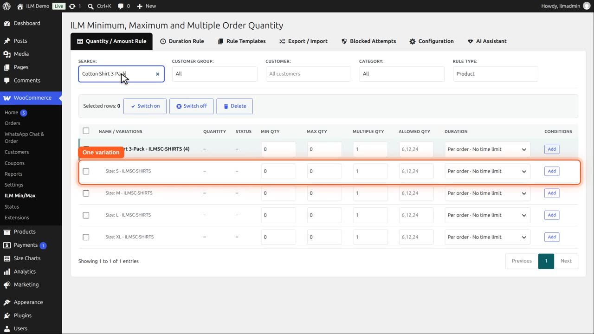
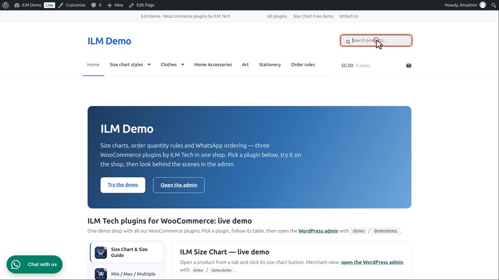
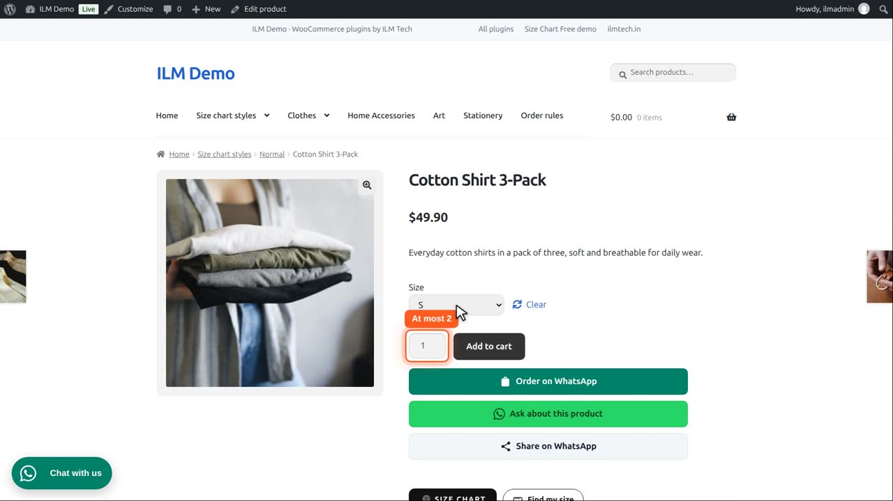
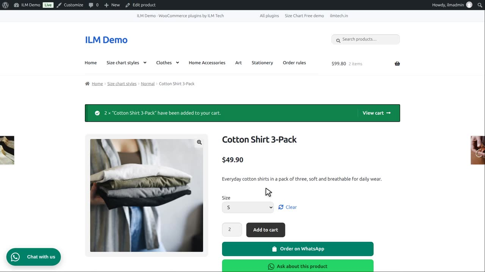
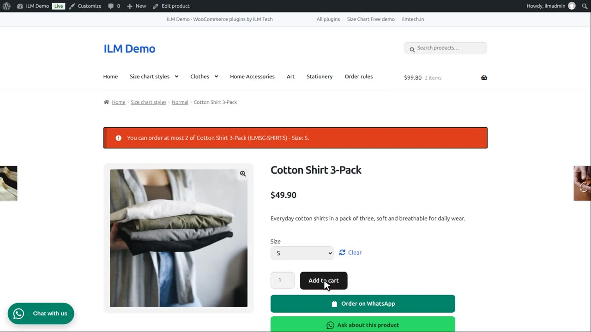

| Level | What it does |
|---|---|
| Product Rule | Attach a rule to one product at a time. |
The Quantity and Amount Rule tab opens on Product rules. Every product of the shop is listed.

Search for the Cotton Shirt 3-Pack. It has variations: one per size.

The bold row is the product itself. A rule here applies to the product as a whole.

Each row below it is one variation, and can have a rule of its own.

We give size S a maximum of two. The other sizes stay free.

On the product page, with size S selected, the quantity box goes up to two at most.

Two of them go into the cart.

One more of size S is refused, and the message names the size.

Size M has no rule, so three of them go into the cart without any message.